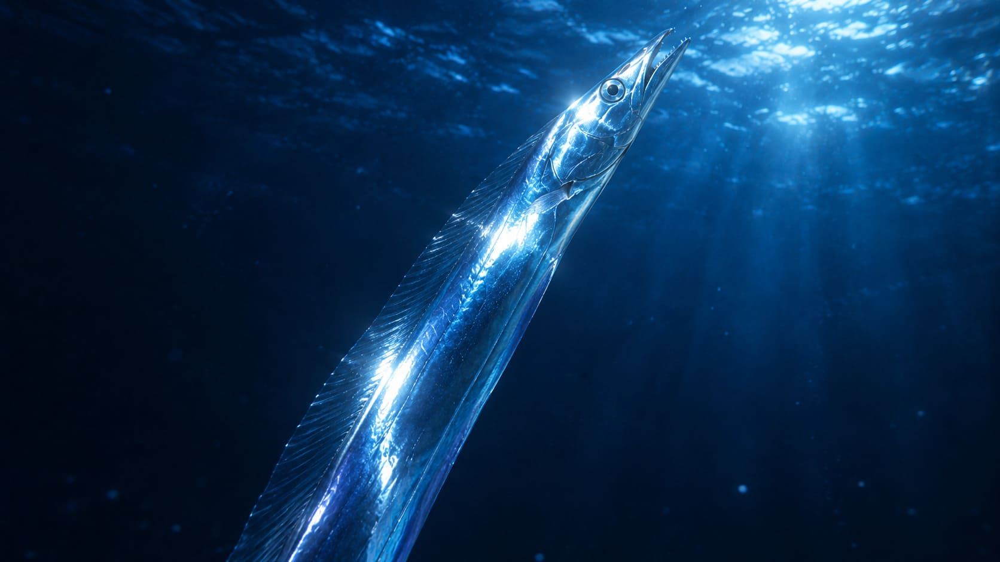
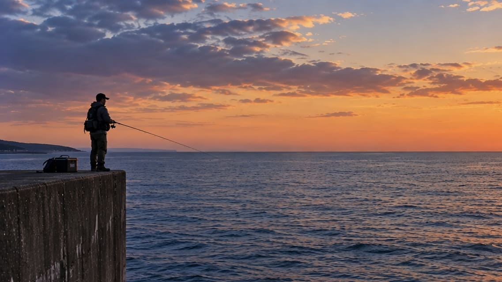

夜の防波堤で狙うタチウオ釣り完全ガイド。レンジを探し、ルアーとエサを使い分ける

1. タチウオはなぜ夜になると岸へやってくるのか
タチウオ釣りを理解するうえで欠かせないのが、魚そのものの生活リズムです。タチウオは一日中同じ場所にいる魚ではなく、時間帯によって泳ぐ水深や行動範囲が大きく変わります。日中は比較的深い場所にいることが多い一方、夕方になると徐々に活動を始め、暗くなるにつれてベイトフィッシュを追いながら浅い場所へ差してくることがあります。これが、堤防からタチウオを狙う場合に「夕マズメから夜」という時間帯が重要になる理由の一つです。
ただし、タチウオが夜になれば必ず浅場へ寄ってくるわけではありません。その日の潮の動きや水温、ベイトの位置などによって、同じ港でもタチウオがいる水深は変化します。昨日は表層近くで入れ食いだったのに、翌日は底付近でしかアタリがないということも珍しくありません。タチウオ釣りで「昨日は釣れたのに今日は釣れない」という現象が起こりやすいのは、この回遊性の高さにも理由があります。
だからこそ、タチウオ釣りでは「この時間ならこのタナ」と固定して考えるより、その日の魚がどこにいるのかを探すことが重要になります。ルアーを変える前にレンジを変える、という考え方が非常に大切なのです。
2. ベイトを探せばタチウオの居場所も見えてくる
タチウオは大型の肉食魚ですが、自分から遠くまで泳いで獲物を追い回すというより、ベイトフィッシュの動きに合わせて効率よく捕食している場面も多くあります。そのため、タチウオそのものを探すより先に「小魚がどこにいるか」を見ると、ポイントを絞り込みやすくなります。
防波堤へ到着したら、まず海面を観察してみましょう。イワシや小アジなどが水面をざわつかせていたり、何かに追われるように突然散ったりしていれば、その周辺にはフィッシュイーターが付いている可能性があります。常夜灯の下に小魚が集まっている場合も同様で、明るい場所にベイトが集まり、それを狙ってタチウオが周囲を回遊していることがあります。
ここで注意したいのは、ベイトが見えている場所とタチウオがいる場所が必ずしも一致するわけではないことです。タチウオはベイトの真下や少し離れた暗い側に潜んでいることもあります。常夜灯の真下だけを狙うのではなく、光の境界線や、その外側までルアーを通してみることが重要です。
3. 防波堤では「どこから投げるか」も重要
タチウオは回遊魚なので、同じ港の中でも釣れる場所と釣れない場所に差が出ることがあります。特に防波堤の先端や港口は潮が動きやすく、外海と港内を行き来するベイトも通過するため、タチウオの回遊ルートになりやすいポイントです。船道のように周囲より水深がある場所も、深いレンジを回遊する個体を狙ううえでは見逃せません。
一方、夜になると港内の常夜灯周辺が急に有力なポイントになることがあります。光によって小魚が集まり、その周辺にタチウオが付くためです。この場合も、必ずしも一番明るい場所が正解とは限りません。明るい場所と暗い場所の境界には、明るい場所へ寄ってきたベイトを待ち伏せする魚が潜んでいることがあります。
つまり、タチウオ釣りでは「有名な堤防だから釣れる」という考え方だけではなく、そこにどんな潮の流れがあり、どこにベイトが集まり、タチウオがどこを通過するのかを考えることが大切です。
4. ルアー釣りは「レンジを探す釣り」と考える
タチウオのルアー釣りでは、ルアーの種類やカラーに目が行きがちですが、実際に釣果を大きく左右するのはレンジです。どれだけ実績のあるルアーを使っていても、タチウオがいる水深を通っていなければ、魚の目の前にルアーを届けることができません。
そこで重要になるのが、着水してからの「カウント」です。ルアーが着水したら、1、2、3……と数えながら沈め、一定の秒数になったところから巻き始めます。最初は5秒、次は10秒、その次は15秒というように変えていけば、表層から中層、さらに深いレンジまで効率よく探ることができます。
そして、もし8秒沈めたところから巻き始めたルアーにヒットしたのであれば、次のキャストでも同じように8秒沈めてみます。再び同じレンジでアタリが出れば、その日のタチウオがいる水深をかなり絞り込めます。ここから先はルアーを次々と交換するより、同じレンジを丁寧に通すほうが効率的です。
5. 夕マズメはワインドで広く探る
夕マズメはタチウオの活性が上がりやすく、ワインドを使った積極的な釣りが面白くなる時間帯です。専用ジグヘッドにワームをセットし、ロッドを軽く弾くように操作すると、ワームが左右へダートします。直線的に泳ぐルアーとは違った不規則な動きがタチウオの捕食スイッチを刺激し、下から突き上げるようなバイトが出ることがあります。

ただし、ワインドは「強く激しく動かすほどいい」というものではありません。高活性のときには大きなダートへ反応していても、時間が経って活性が落ちてくると、同じ操作では追い切れなくなることがあります。その場合はシャクリ幅を小さくし、ダートとダートの間に入れるフォールを長くしていきます。
例えば最初は数回連続してシャクっていたものを、反応が悪くなったら2～3回程度の小さなダートに変え、その後しっかり沈めるようにします。それでも反応がなければ、ワインドそのものをやめて、ワームのただ巻きへ切り替えるのも有効です。
6. フォール中の違和感を見逃さない
タチウオ釣りでは、ルアーを動かしている最中だけでなく、動きを止めて沈ませている時間にも注意が必要です。タチウオがフォールするルアーを下から追ってきて、そのまま食い上げることがあるためです。
典型的なのが、フォール中に突然ラインが止まるパターンです。本来ならルアーが沈み続けるはずなのに、カウントの途中でラインが止まったり、少し横へ動いたりする場合は、タチウオがルアーを咥えている可能性があります。
さらに厄介なのが、急にラインがたるんでルアーの重さが消える「食い上げ」です。魚が下からルアーを食い、そのまま上へ移動すると、釣り人側には「ルアーを失ったような軽さ」として伝わります。このときに「何だったんだろう」とそのまま巻き始めるのではなく、素早く糸フケを取ってアワセを入れることが重要です。
7. ただ巻きは低活性時の強い選択肢
ワインドで反応がないと、さらに激しいアクションを試したくなります。しかし、タチウオが低活性のときには、逆にルアーを静かに動かしたほうが反応する場合があります。
シャッド系ワームやシンキングミノーを使い、タチウオがいるレンジを一定速度で通します。重要なのは、ただゆっくり巻けばいいということではなく、「同じ水深をできるだけ長く通す」ことです。
例えば表層を引いて反応がなければ、次のキャストでは少し深く沈めてから同じ速度で巻いてみます。それでもダメならさらに深くする。この方法なら、ルアーの動き自体を大きく変えずに、タチウオのいるレンジだけを探ることができます。
常夜灯周辺では、明暗の境界を横切るようにルアーを通すのも効果的です。明るい場所から暗い場所へ入った瞬間、あるいは暗い場所から明るい場所へ出る瞬間にバイトが出ることもあるため、ただ巻きでも「どこを通しているか」を意識することが重要です。
8. メタルジグは「遠投」だけでなく「レンジ探索」に使う
メタルジグは遠投性能に優れているため、タチウオが沖にいるときや、広範囲を探りたいときに便利です。しかし、タチウオ釣りでは飛距離だけを目的に使う必要はありません。
メタルジグのもう一つの大きなメリットが、沈下速度を利用してレンジを素早く変えられることです。1投目は5秒、2投目は10秒、3投目は15秒と沈める時間を変えるだけでも、かなり広い水深を探ることができます。
アクションについても、青物を狙うときのような激しいジャークだけに限定する必要はありません。軽いジャークからフォールへ移行したり、一定速度で巻きながら時々フォールを入れたりするなど、タチウオの反応に合わせて変えていきます。
特にフォールでアタリが出る場合は、ジャークの回数を増やすより、フォールの時間を意識したほうが釣果につながることがあります。
9. タチウオのタックルは「切られないこと」も重要
タチウオ用のタックルは、単純に魚のサイズだけで決めるものではありません。タチウオ釣りでは鋭い歯によるラインブレイクが常に付きまとうため、魚を掛けるための性能と同じくらい、ルアーを失わないための対策が重要になります。
PEラインは0.6～1.5号程度を目安に、使用するルアーの重量や飛距離、周囲の根や障害物などを考えて選びます。リーダーにはフロロカーボンを使う方法が一般的ですが、歯が当たる状況ではワイヤーリーダーを使用する方法もあります。
ただし、ワイヤーを使えば絶対に切られないというわけではなく、ルアーの動きや扱いやすさにも影響します。そのため、状況によってフロロとワイヤーを使い分けるのが現実的です。
また、タチウオを何匹か釣った後は、リーダーを指で軽く触って状態を確認します。ザラつきや傷があれば交換します。「まだ切れていないから大丈夫」と使い続けた結果、次の一匹で突然切られることは珍しくありません。
10. 釣れないときは「ルアー」より先に疑うものがある
タチウオが釣れないとき、多くの人が最初に考えるのが「ルアーが合っていないのではないか」ということです。しかし、タチウオ釣りではルアーを交換する前に確認したいことがあります。
それが、レンジ、速度、アクション、ポイントです。
まず表層を探り、反応がなければ中層へ下げ、それでもダメなら深いレンジまで探ります。それでも反応がなければ巻き速度を変え、ワインドからただ巻きへ、あるいはその逆へ変更します。それでも何もなければ、そこで初めてルアーそのものを変更するという考え方です。
もちろん、タチウオがその場所にいない可能性もあります。ベイトの気配がなく、潮もほとんど動かず、周囲でもまったく反応がないのであれば、ポイントを移動する判断も必要です。
タチウオ釣りでは「釣れない＝ルアーが悪い」と考えないことが重要です。魚のいる場所を外しているだけなら、どれだけルアーを交換しても状況は変わりません。
11. ルアー釣りの基本パターン
夕方に防波堤へ到着したら、まず海の状況を観察します。ベイトが確認できるなら、その周辺を優先し、見えない場合は防波堤の先端や港口、常夜灯周辺など、タチウオが回遊しそうな場所から探ります。
日没前後はワインドやメタルジグで広く探り、着水からのカウントを変えながら魚のいるレンジを探します。ヒットが出たら、そのカウントを覚えて同じレンジを繰り返します。例えば8秒で食ったのであれば、次も8秒。さらに同じレンジでアタリが続くなら、そこがその日の重要なタナです。
完全に暗くなって活性が落ちたら、ワインドの動きを弱めたり、シャッド系ワームやシンキングミノーのただ巻きへ切り替えます。常夜灯がある場所では明暗部を中心に探り、魚の反応が出た場所を何度も通します。
このように考えると、タチウオ釣りは「今日はどのルアーが当たりなのか」を当てるゲームではありません。その日のタチウオが、どこにいて、どの速度で動くルアーに反応し、どのタイミングで捕食しているのかを探し出す釣りです。
タチウオは日によって状況が大きく変わるからこそ、前回の成功パターンをそのまま持ち込むだけでは通用しないことがあります。しかし逆に、レンジ、時間帯、ベイト、潮、アクションの関係を一つずつ整理していけば、その日のパターンが見えてくることがあります。
そして一度、「着水から何秒」「どの速度」「どのアクション」「どの場所」という条件が揃えば、そこから連続してアタリが出ることもあります。
タチウオのルアー釣りの面白さは、鋭い歯を持つ魚を力でねじ伏せることだけではありません。暗くなっていく海の中で見えない魚の位置を、カウントやラインの変化、ベイトの動きから推測し、一つずつ答えを探していくところにあります。
12. エサ（ウキ）釣りについて――ルアーで食わない魚を、じっくり食い込ませる
タチウオ釣りでは、ルアーへの反応が鈍い状況や、じっくり腰を据えて大型を狙いたい場面で、エサ釣りが強い武器になります。ルアー釣りが「魚のいるレンジを素早く探し、動きで捕食スイッチを入れる釣り」だとすれば、エサ釣りはタチウオが回遊してくる層にエサを漂わせ、じっくり食い込ませる釣りです。同じタチウオを狙っていても、アタリの出方やアワセのタイミングには大きな違いがあります。
特に代表的なのが、夜の防波堤で電気ウキを眺めながらアタリを待つ釣りです。暗闇の中で赤や緑の電気ウキがゆっくり動き、やがて水面へ吸い込まれていく瞬間は、タチウオのウキ釣りならではの醍醐味でしょう。アタリが出たからといってすぐに竿を立てるのではなく、タチウオがエサをくわえ、向きを変えながら食い込んでいく時間を待つことが、この釣りでは重要になります。
ウキ釣りのタックルと仕掛け
タックルは3号程度の磯竿を基本に、ナイロンライン5～6号を100m以上巻いたスピニングリールを組み合わせます。防波堤からの夜釣りでは、ある程度の遠投性能と魚を寄せるための操作性があれば十分で、専用タックルにこだわる必要はありません。
ウキはケミホタルを装着できる10～12号負荷程度の棒ウキが扱いやすく、遠投して広い範囲を探る場合にも向いています。一方、比較的浅い場所や近距離を狙う場合には、1～1.5号程度の小型円錐ウキを使う方法もあります。仕掛けの重さや風、潮の流れに合わせてウキを選ぶことで、エサを狙ったレンジに安定して送り込めます。
ハリスにはフロロカーボン5～6号やワイヤーハリスを使用し、タチウオ専用の針を組み合わせます。タチウオはエサを横から噛みつくことも多く、針だけでなくハリスまで口元に入りやすいため、仕掛けを準備するときは「食わせること」と同時に「切られないこと」も考えておく必要があります。
エサは切り身と生きエサを使い分ける
手軽で扱いやすいのがサバやサンマなどの切り身エサです。幅1cm、長さ4～6cmほどの短冊状に切り、水中でヒラヒラと動くようにチョン掛けします。タチウオは視覚だけでなく、こうしたエサの動きや匂いにも反応するため、単純に針へ刺すだけでなく、水中で自然に動く状態を作ることが重要です。
切り身の大きさは、魚の活性やサイズによって調整できます。アタリがあるのに食い込まないときはエサを小さくして針掛かりを良くし、比較的大型が回っていてしっかりエサを食わせられる状況なら、ある程度存在感のある切り身を使う方法もあります。
さらに強いアピール力を持つのが、アジやイワシなどの生きエサです。泳いでいるエサそのものがタチウオにとって捕食対象になるため、切り身とは違った自然な誘いができます。鼻掛けや背掛けにして泳がせ、できるだけ弱らせずに使うのが基本です。
生きエサの場合は、エサ自体が泳ぐことで仕掛けの位置や状態が変化します。そのため、ウキの動きだけを見るのではなく、エサがどのように動いているのかを意識することも大切です。
ウキが沈んでも、すぐにはアワせない
エサ釣りで最も重要なのが、アワセのタイミングです。ルアー釣りでは違和感があれば早めにフッキングへ移りますが、ウキ釣りでは逆に「待つ」ことが釣果を左右します。
タチウオのアタリは、最初からウキが一気に消し込むとは限りません。ウキがゆっくり沈んだり、上下にフワフワと揺れたり、一定の場所で止まったりすることがあります。これはタチウオがエサをくわえたり、向きを変えたりしている途中の可能性があります。
ウキが完全に水中へ消し込んでも、そこで慌ててアワせず、さらに3～6秒ほど待って食い込ませます。タチウオがエサを十分にくわえたところで、大きく鋭くアワセを入れるのが基本です。
ただし、単純に長く待てばよいというわけではありません。待ちすぎれば針を深く飲み込まれたり、ハリスを歯で切られたりする可能性もあります。重要なのは「ウキが沈んだ瞬間」ではなく、タチウオがエサをしっかり持って走り始めたタイミングを見極めることです。
また、ウキが沈みきらず途中で止まってしまうこともあります。このようなときは竿を手前へゆっくり引き、エサを少し動かしてみます。静止していたエサが逃げるように動くことで、タチウオが再び食い込むことがあります。こうした小さな誘いを入れられるのも、ウキ釣りの面白いところです。
エサ釣りでは「釣れない理由」を仕掛けから考える
ウキ釣りでアタリがないとき、単純に「タチウオがいない」と判断するのは早すぎます。まず確認したいのが、エサが残っているのか、それとも何らかの理由でなくなっているのかという点です。
エサがそのまま残っているのであれば、タチウオがいる層と仕掛けの位置が合っていない可能性があります。反対に、ウキには明確なアタリが出ないのにエサだけが取られているなら、タチウオが仕掛けの近くまで来ている可能性があります。その場合は、仕掛けの位置を少し浅くして反応を見るなど、細かく調整していきます。
最初から一つのタナに固定するのではなく、魚の反応を見ながら仕掛けを動かしていく。この考え方はルアー釣りと共通していますが、ルアーではキャストとリトリーブによって探るところを、エサ釣りではウキ下の調整によって探っていくわけです。
タチウオは同じ場所にいても時間によって泳層が変わることがあります。最初に反応があった位置を覚えておき、そこから少しずつ調整していくと、その日のパターンを掴みやすくなります。
ルアーとエサを使い分ける
タチウオ釣りでは、ルアーとエサのどちらか一方だけにこだわる必要はありません。夕方の高活性な時間帯にはルアーで広範囲を探り、反応が落ちてきたところでウキ釣りへ切り替えるという組み立てもできます。
逆に、最初から電気ウキを並べて回遊を待ち、ウキの反応が出た場所や時間帯を把握してから、その周辺をルアーで攻めるという考え方もできます。ルアーは魚の居場所を探すのが得意で、エサ釣りは回遊してきた魚をその場でじっくり狙うのが得意です。
タチウオは日によって反応が大きく変わる魚だからこそ、「今日はルアーの日」「今日はエサの日」と最初から決めつけるより、その日の魚の活性や回遊状況に合わせて釣り方を変えていくほうが、状況に対応しやすくなります。
そして、どちらの釣りでも最後に重要になるのが取り込みです。足元まで寄せたタチウオは、水面近くで突然激しく暴れることがあります。小型ならそのまま抜き上げられる場合もありますが、重量のある大型個体では無理をせずタモ網を使ったほうが安全です。
タチウオの口元へ素手を近づけるのは厳禁です。魚体を扱うときは厚手のタオルやフィッシュグリップを使用し、針を外す際にはプライヤーを使って十分に距離を取ります。見た目以上に鋭い歯を持つ魚なので、釣り上げた後まで含めて安全に扱うことが、タチウオ釣りを楽しむための基本となります。
📍 関東の生息・釣果スポット
※マップ上の赤いドットが釣れるポイントです。